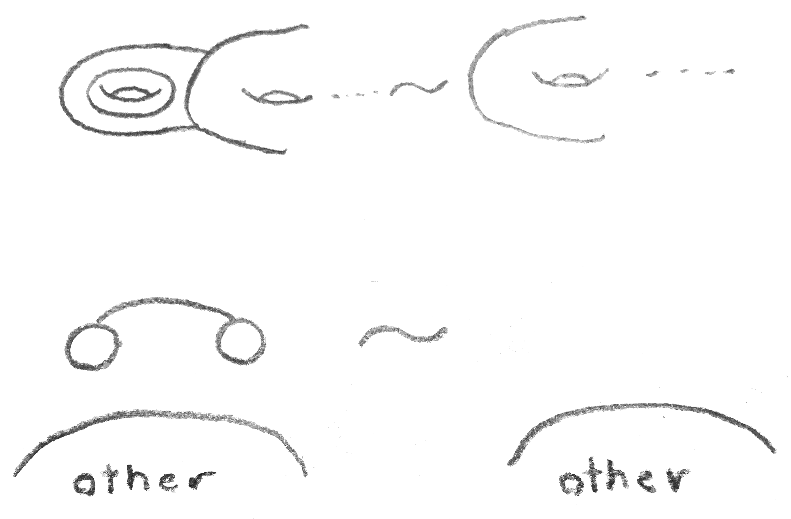
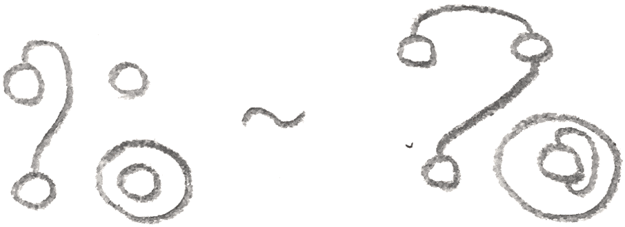
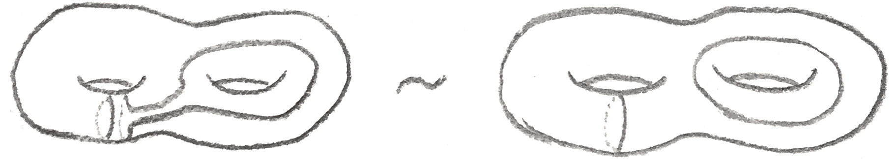
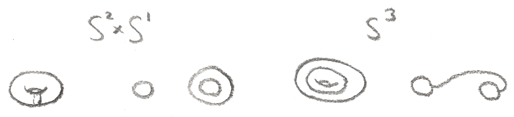
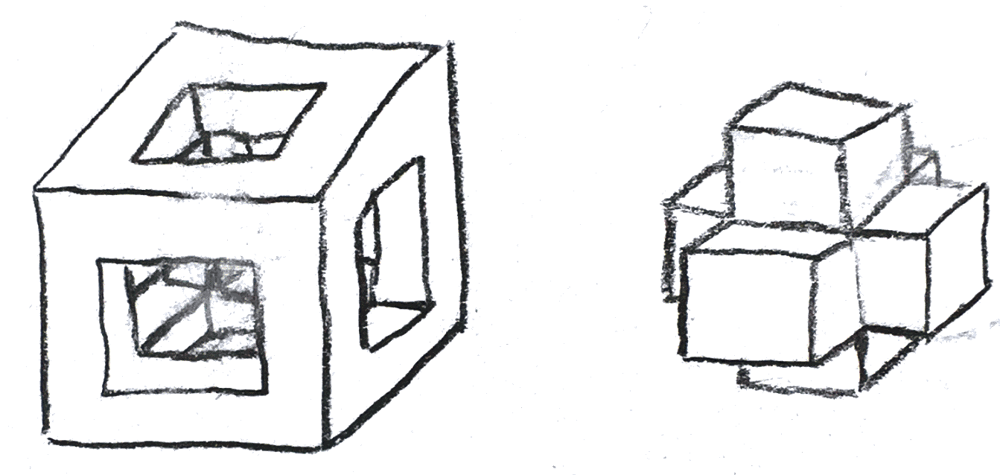
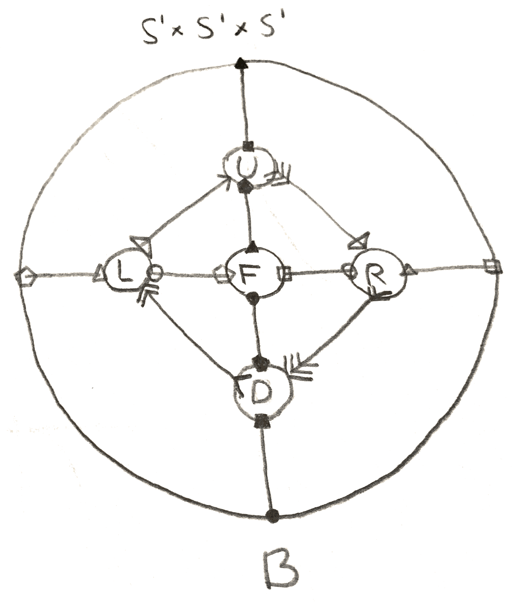
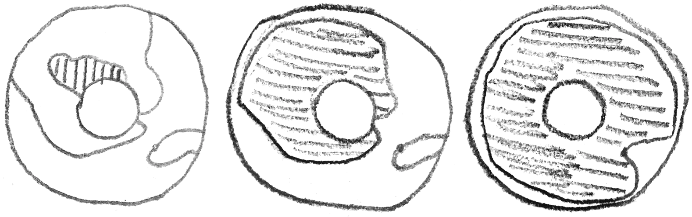
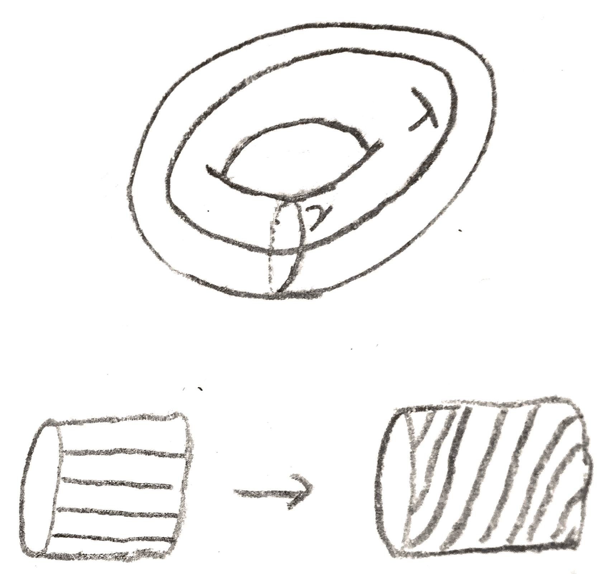
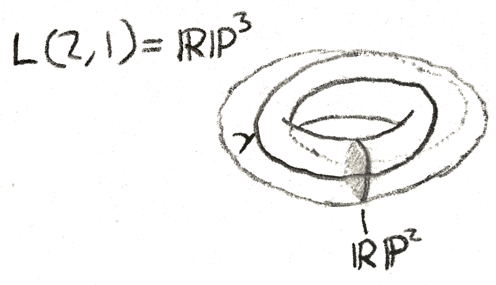

Previously we saw that using Morse theory, we could classify manifolds of dimension \(\leq 2\). What happens in dimension \(3\)? For simplicity, we will consider orientable manifolds. An exercise from last time said that any \(3\)-manifold built out of only \(0\)-handles and \(1\)-handles is diffeomorphic to a ball with \(1\)-handles attached to it. If there are \(g\) \(1\)-handles, we call this a handlebody of genus \(g\). Thus, say that we have a self-index Morse function \(f\) on such a \(3\)-manifold \(M\), i.e one where the index \(i\) critical points happen when \(f\) takes the value \(i\). Then since \(f(3-x)\) is also a self-indexing Morse function, so \(f^{-1}(-\infty ,\frac 3 2]\) and \(f^{-1}[\frac 3 2,\infty )\) are both handlebodies, that have the same genus as they are glued along their boundary, which is an orientable surface of genus \(g\). We call this a Heegaard splitting of \(M\).
Let’s find Heegaard splittings of some simple \(3\)-manifolds, namely products of spheres. \(S^3\) has a genus \(0\) Heegaard splitting that consists of one \(0\)-handle and one \(3\)-handle, namely it consists of a ball and its complement in \(S^3\). Alternatively, we can add a cancelling \(1\) and \(2\)-handle so that we get two solid tori. This is the decomposition of \(S^3\) given by any standardly embedded solid torus and its complement. The meridian of one solid torus is attached to the longitude of the other. This process of adding a cancelling \(1\) and \(2\)-handle is called stabilization. Two Heegaard splittings are called stably equivalent if after some amount of stabilization, they become the same (i.e there is a diffeomorphism of the two handlebodies sending one Heegaard splitting to the other).
There is a combinatorial way to draw Heegaard splittings. Namely, we view glueing the second handlebody to the first as attaching \(2\) and \(3\)-handles to a solid torus. The \(2\)-handles are specified by knots on the boundary of the handlebody, and the \(3\)-handle requires no specification, as there is one orientation preserving diffeomorphism of \(S^2\) up to isotopy, and it extends to \(B^3\). These circles give a way of drawing the Heegaard splitting, called a Heegaard diagram. A way to draw a Heegaard diagram other than directly on a genus \(g\) surface is to imagine the compactified plane as the boundary of a \(0\)-handle, and then attaching \(1\)-handles, as specified by a thickened points (i.e. circles) to form a genus \(g\) handlebody, on which we can then draw circles.
Indeed, any drawing of \(n\) circles on a surface of genus \(g\) is the Heegaard diagram of some \(3\)-manifold, as long as the circles are disjoint and homologically linearly independent. This follows from the fact that after making cuts along any such circles, the resulting surface is connected by the Meyer-Vietoris sequence, so must be a sphere with holes in it by looking at its Euler characteristic, so after attaching the \(2\)-handles, we can attach a \(3\)-handle.
Via Morse theory, we get a complete set of moves on Heegaard diagrams. The first move is an isotopy of the circles, and the second is adding/removing a cancelling pair of \(1\) and \(2\)-handles. This is shown in Figure 1:

The last move is a handle slide. Make a parallel translate one circle, and then connect sum it with another circle. This amounts to sliding the other circle over the disk that the first circle bounds. It is shown in Figure 2:
 
For example, in Figure 3 are some Heegaard diagrams for \(S^3\) and \(S^2\times S^1\):

Let’s do a more complicated example. We can make a genus \(3\) Heegaard splitting of \(S^1\times S^1\times S^1\) by imagining it as a quotient of a cube. Then the Heegaard splitting is shown in Figure 4:

By cutting along the circles that are the edges of the cube, we get the Heegaard diagram in Figure 5:

From Morse theory, we have:
Proposition 2.1. Every compact orientable \(3\)-manifold admits a Heegaard splitting. Moreover, any two such splittings are stably equivalent.
We say the Heegaard genus of \(M\) is the smallest genus Heegaard splitting that \(M\) admits. We have already seen that the only genus \(0\) \(3\)-manifold is \(S^3\), that \(S^2\times S^1\) is genus \(1\), and \(S^1\times S^1\times S^1\) is genus \(\leq 3\). However, note that if \(g(M)\) is the genus and \(\mu (M)\) is the minimal number of generators of \(\pi _1(M)\), then by van-Kampen’s theorem, \(\mu (M) \leq g(M)\). Thus \(3 = \mu (S^1\times S^1\times S^1) = g(S^1\times S^1\times S^1)\).
Let’s classify genus \(\leq 1\) \(3\)-manifolds. To do this, we can classify genus \(1\) Heegaard diagrams, which are knots on a torus.
I claim that knots on a torus are determined by their image in the fundamental group. First note that if the image in the fundamental group is nontrivial, i.e. \((p,q)\), it is primitive, meaning \(p,q\) are relatively prime. To see this, after a change of basis, it suffices to assume that \((p,q) = (0,n), n> 0\) is the image of a knot in the fundamental group and show that \(n = 1\). To do this we have the following lemma:
Lemma 2.2. Let \(X\subset \RR ^2\) be path connected, and \(L\) a line segment between two points in \(X\), but not necessarily contained in \(X\). Then for each \(0 \leq \alpha \leq 1\), there is a parallel line to \(L\) also between two points in \(X\) that is length either \(\alpha |L|\) or \((1-\alpha )|L|\).
Proof. We can suppose \(X\) is a path between the endpoints of \(L\), which we can assume to be \((0,0),(1,0)\). Then since \(X\) is compact, \(X\) attains a maximum and minimum \(y\) coordinate, \(y_+,y_-\) respectively. Then consider the paths \(L_{-\alpha },L_{1-\alpha }\) where \(L_\beta \) is \(L\) except translated in the \(x\) direction by \(\beta \). Now since \(L\) attains the minimum and maximum, it separates the strip cut out by \(y_-\leq y \leq y_+\) into pieces. To prove the lemma it suffices to show that \(L_{-\alpha }\) or \(L_{1-\alpha }\) intersect \(L\). But both contain a translate of the point with \(y_-\), which lie on different sides of the strip, and are connected by \(L_{-\alpha } \cup L_{1-\alpha }\), so one of them must intersect the strip. □
Corollary 2.3. If \(P\) is a path in \(\RR ^2\) from \((0,0)\) to \((0,n)\), there are two points on \(P\) with the same \(y\) coordinate whose \(x\) coordinates are congruent mod \(1\).
Proof. By applying the Lemma 2.2 with the correct \(\alpha \), we can get inductively that there are two points whose \(x\) coordinates differ by \(n/m\) for any \(m \in \NN \). In particular setting \(n = m\) gives the result. □
Now we must try to classify knots in the plane. To do this, we will use the following standard theorem in topology:
Theorem 2.4. Any knot in \(S^2\) splits it into two components, the closure of each a standard disk.
Theorem 2.5. Any two knots in \(\RR ^2\) or \(S^2\) are isotopic. If they are disjoint, the isotopy can avoid everything but the region between the knots.
Proof. It doesn’t really matter whether it is \(S^2\) or \(\RR ^2\), and by isotoping twice, it suffices to assume the knots are disjoint. Then by applying the theorem above twice, the region between the two is diffeomorphic to an annulus. Then any such diffeomorphism gives an isotopy between the knots. □
It is easy to produce two types of knots in \(T^2\). Namely for any relatively prime \(p,q\), we can take the straight line segment in \(\RR ^2\) from \((0,0)\) to \((p,q)\), and modulo \(\ZZ ^2\) this will give a knot on the torus. Alternatively, we can take a small disk around a point, and the boundary will be a nulhomotopic knot. We will call these knots standard.
Theorem 2.6. Any smoothly embedded knot on the torus is isotopic to a standard one.
Proof. If the torus is \(S^1 \times S^1\) where the knot is either nulhomotopic or in the homotopy class of \(S^1 \times 0\) (this can be assumed after a change of basis), choose by Sard’s theorem a knot of the form \(S^1 \times \alpha \) that transversely intersects the knot. Then view the torus as an annulus in \(\RR ^2\), where the inner circle is identified with the outer circle, and both represent \(S^1 \times \alpha \). Find two intersection points of the knot with the boundary that are connected by an arc on the boundary and an arc on the knot bounding a region that doesn’t contain more points on the knot. By the previous theorem, we can isotope the knot to remove those intersection points. To see that such intersection points must exist, simply note that the intersection number of the knot and \(S^1 \times \alpha \) is \(0\), so there must be one negative intersection following a positive intersection. If the region bounded by these intersection points contains another part of the knot, then any segment in that part of the knot must intersect the same boundary component of the annulus twice, so we can repeatedly look at smaller arcs until we get one that doesn’t contain any others. After we have removed all such points, we either have a knot bounding a compact region of \(\RR ^2\) containing the inner circle of the annulus or not. Then by our understanding of knots in the plane, we see that the knot is standard.
The proof is demonstrated in Figure 6:

Thus for a Heegaard diagram, for each \(p,q\) relatively prime, there is a knot on the torus that goes \(q\) times in the meridian direction and \(p\) times in the longitude direction. Note that the number \(\frac p q\) is well-defined. We will call the \(3\)-manifold a lens space, and write it as \(L(p,q)\).
Note that we can assume \(p > 0\), and that \(p\) is an invariant of \(L(p,q)\) (look at the fundamental group). \(q\) is not, we can for example change bases, via the self diffeomorphism of the solid torus torus that twists along the meridian as shown in Figure 7:

Via this diffeomorphism we see that \(L(p,q) = L(p,q-kp)\) for any \(k\), so we can assume that \(q<p\). We can also switch which torus we are treating as the \(0\)-handle and \(1\)-handle, and so we get that \(L(p,q) = L(p,q^{-1})\) where the inverse is mod \(p\). \(L(p,q)\) and \(L(p,-q)\) are the same up to changing orientation.
Note that since the diffeomorphisms of the torus are determined by where they send the meridians, and we have classified knots up to isotopy, we have essentially classified diffeomorphisms of the torus up to isotopy. The components of the orientation preserving diffeomorphism group of a manifold \(M\) is called its mapping class group and denoted \(\MCG (M)\).
If we use \((\gamma ,\lambda )\) as our basis for homology, then the Dehn twists act on homology by the matrices \(\begin{bmatrix} 1 && \pm 1\\ 0 && 1 \end{bmatrix}\) and \(\begin{bmatrix} 1 && 0\\ \pm 1 && 1 \end{bmatrix}\). These generate \(\SL _2(\ZZ )\), and since orientation preserving homeomorphisms act on \(H_1\) within \(\SL _2(\ZZ )\), we have
Corollary 2.8. \(\MCG (S^1\times S^1) = \SL _2(\ZZ )\), generated by Dehn twists on \(\lambda , \gamma \).
Now view \(S^3\) as the unit sphere inside \(\CC ^2\), and we can consider the \(\ZZ /p\ZZ \) action given by multiplication by \((\zeta _p,\zeta _p^q)\), where \(\zeta _p\) is a primitive \(p^{th}\) root of unity.
This action is free, and the lens space is in fact the quotient. To see this, we can first consider an action of \(S^1\subset \CC ^\times \) on \(L(p,q)\) given by multiplication by \((x^{1/p},x^{q/p})\). This action is free on all \((w,z) \in L(p,q)\) except the circle where \(w = 0\), where the action wraps around the orbit \(q\) times. If \(z = 0\), there is one orbit, and if \(w \neq 0, z \neq 0\), there is a unique representative of each orbit of the form \((w,z), w \in (0,1), z \in S^1\), so we see that the quotient space is a cylinder with both ends capped off with the points \(w = 0\) and \(z = 0\). In other words the lens space is an \(S^1\) bundle over a sphere that is locally trivial except maybe at \(w = 0,z = 0\).
Indeed it is not locally trivial over \(w = 0\), but nevertheless, it is in a nice form near that point. Namely, we can say that given a rational number \(\frac{q}{p}\), we can form an \(S^1\) bundle called the standard fibred torus. This is given by considering \(D^2\times \RR \) where we identify \((a\zeta _p^q,b)=(a,b+1)\). There is a natural action of \(\RR \) that descends to an action of \(S^1\), yielding a bundle that is trivial except maybe at \(0 \times \RR \), the exceptional fibre. Rational numbers differing by an integer give the same fibre bundle, and only \(0\) gives the trivial bundle (or even a locally trivial bundle). We can see that the part of the lens space with \(|w|^2 \leq \frac 1 2\), \(|z|^2 \leq \frac 1 2\) are each standard fibred tori. Indeed, let \(kq+rp=1\), so that at \(|w| \leq \frac 1 2\), we have a map of \(S^1\) actions from the \(\frac r q\) fibred torus given by \((a,b) \mapsto (a\zeta _{pq}^b, \zeta _p^b\sqrt{1- |a|^2})\). This is a surjective map, so it shows that the lens space \(L(p,q)\) can be obtained by taking the standard fibred \(\frac r q\) solid torus, and identifying fibres on the boundary.
This gives a Heegaard splitting of this \(3\)-manifold, as contracting circles along the boundary to points is the same as attaching in disks along the circles.
We have seen that the lens spaces have many decompositions as \(S^1\) bundles that are locally trivial except at a few fibres, where it is modeled from the standard fibred torus. A \(3\)-manifold that is constructed this way is called a Seifert fibre space. Quite a lot of \(3\)-manifolds are Seifert fibre spaces, especially simple ones like the lens spaces.
The bundle map is of a Seifert fibre space is sometimes in itself of interest. For example when \(p=q=1\), this is just the Hopf fibration: the generator of \(\pi _3(S^2)\), and this fibration factors through \(\RR \PP ^3\), giving the Seifert fibration for \(p=2,q=1\). We can draw a picture of our explicit description of \(\RR \PP ^3\) given by a quotient of a standard fibred torus. Namely, take a solid torus, and collapse each line such as the one drawn below to a point. Then each disk turns into a copy of \(\RR \PP ^2\), except that each copy of \(\RR \PP ^2\) shares a circle in common. By removing one of these \(\RR \PP ^2\), we are left with an open disk times an open interval, which is the cell decomposition \(\RR \PP ^3 = \RR ^3\cup \RR \PP ^2\).
